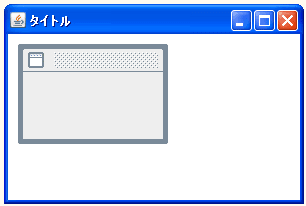

- Home ›
- Swing ›
- JDesktopPaneクラス
JInternalFrameクラスの定義とコンストラクタ
JInternalFrameクラスの定義を確認します。クラス図は次のようになっています。
- java.lang.Object
- java.awt.Component
- java.awt.Container
- javax.swing.JComponent
- javax.swing.JInternalFrame
- public class JInternalFrame extends JComponent implements Accessible, WindowConstants, RootPaneContainer
JInternalFrameクラスはJComponentクラスのサブクラスとなっています。JComponentクラスはSwingで用いられる多くのコンポーネントのベースとなっているクラスです。
JInternalFrameクラスはデスクトップペインの中に追加される子ウィンドウを生成するために使われます。
JInternalFrameクラスのコンストラクタ
JInternalFrameクラスをを利用するにはコンストラクタを使ってJInternalFrameクラスのオブジェクトを作成します。どのようなコンストラクタが用意されているか確認してみます。
| コンストラクタ |
|---|
| JInternalFrame() サイズ変更、クローズ、最大化、アイコン化を行うことができない JInternalFrame を、タイトルなしで作成します。 |
| JInternalFrame(String title) サイズ変更、クローズ、最大化、アイコン化を行うことができない JInternalFrame を、指定されたタイトルで作成します。 |
| JInternalFrame(String title, boolean resizable) クローズ、最大化、アイコン化を行うことができない JInternalFrame を、タイトルと、サイズ変更可能性を指定して作成します。 |
| JInternalFrame(String title, boolean resizable, boolean closable) 最大化、アイコン化を行うことができない JInternalFrame を、タイトル、サイズ変更可能性、およびクローズ可能性を指定して作成します。 |
| JInternalFrame(String title, boolean resizable, boolean closable, boolean maximizable) アイコン化を行うことができない JInternalFrame を、タイトル、サイズ変更可能性、クローズ可能性、および最大化可能性を指定して作成します。 |
| JInternalFrame(String title, boolean resizable, boolean closable, boolean maximizable, boolean iconifiable) タイトル、サイズの変更可能性、クローズ可能性、最大化可能性、およびアイコン化の可能性を指定して、JInternalFrame を作成します。 |
コンストラクタは6つ用意されています。JInternalFrameクラスから子ウィンドウとして表示されるフレームを作成します。フレームにはそれぞれタイトルや最大化、アイコン化、クローズのボタンの設置が行うことができ、どのようなフレームにするかによってコンストラクタを使い分けます。
では1つ目のコンストラクタを確認してみます。
JInternalFrame public JInternalFrame()
サイズ変更、クローズ、最大化、アイコン化を行うことができない JInternalFrameを、タイトルなしで作成します。
このコンストラクタで作成されるインターナルフレームはタイトルが設定されず、最大化、アイコン、クローズのボタンも設置されません。
実際の使い方は次のようになります。
JInternalFrame iframe = new JInternalFrame();
インターナルフレームを表示する
JInternalFrameクラスのオブジェクトを作成した段階では、インターナルフレームは非表示となっています。表示するためにはJInternalFrameクラスの親クラスであるJComponentクラスで用意されている「」メソッドを使います。
setVisible public void setVisible(boolean aFlag)
コンポーネントを可視または不可視にします。Component.setVisible をオーバ ーライドします。 パラメータ: aFlag - コンポーネントを可視にする場合は true、不可視にする場合は false
引数には表示するかどうかを表すboolean型の値を設定します。「true」の場合は表示、「false」の場合は非表示となります。
実際の使い方は次のようになります。
JInternalFrame iframe = new JInternalFrame(); iframe.setVisible(true);
サンプルプログラム
では簡単なサンプルを作成して試してみます。
import javax.swing.*;
import java.awt.BorderLayout;
public class JDesktopPaneTest2 extends JFrame{
public static void main(String[] args){
JDesktopPaneTest2 frame = new JDesktopPaneTest2();
frame.setDefaultCloseOperation(JFrame.EXIT_ON_CLOSE);
frame.setBounds(10, 10, 300, 200);
frame.setTitle("タイトル");
frame.setVisible(true);
}
JDesktopPaneTest2(){
JDesktopPane desktop = new JDesktopPane();
JInternalFrame iframe = new JInternalFrame();
iframe.setSize(150, 100);
iframe.setLocation(10, 10);
iframe.setVisible(true);
desktop.add(iframe);
getContentPane().add(desktop, BorderLayout.CENTER);
}
}
上記をコンパイルした後で実行すると次のように表示されます。

インターナルフレームのサイズや位置、そしてデスクトップに追加する方法は次のページ以降で確認していきます。
( Written by Tatsuo Ikura )

著者 / TATSUO IKURA
初心者～中級者の方を対象としたプログラミング方法や開発環境の構築の解説を行うサイトの運営を行っています。